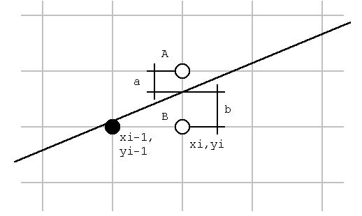

Graphical programming in Assembly (DOS)
Contents
- 1. Change to a VGA resolution.
- 2. Write to the video memory
- 3. Adjusting the palette
- 4. Read the video memory
- 5. Different write modes
- 6. Drawing a line
- 7. Resources
1. Change to a VGA resolution.
With BIOS interrupt 13 AH = 00 we're ably to change the current screen resolution (See below).
| Al (hex) | video mode |
0 1 2 3 4 5 6 7 ... F 10 11 12 |
text 40 x 25 16 grey text 40 x 25 16 color text 80 x 25 16 grey text 80 x 25 16 color graph (CGA) 320 x 200 color graph (CGA) 320 x 200 black / white graph (CGA) 640 x 200 black / white text 80 x 25 black / white (MDA, Hercules) ... graph (EGA,VGA) 640x350 grey graph (EGA,VGA) 640x350 16 colors graph (VGA) 2 colors graph (VGA) 16 colors |
In the next paragraphs we'll discuss meanly the standard VGA resolution (12h) These days most VGA-boards has "Super VGA" resolutions, in the next table you'll find the information to change to a "VESA Super VGA"
| INT 10h | AX = 4F02h |
| BX = mode |
| BX | video mode |
100h 101h 102h 103h 104h 105h 106h 107h 108h 109h 10Ah 10Bh 10Ch |
graph 640x400 256 colors graph 640x480 256 colors graph 800x600 16 colors graph 800x600 256 colors graph 1024x768 16 colors graph 1024x768 256 colors graph 1280x1024 16 colors graph 1280x1024 256 colors text 80x60 text 132x25 text 132x43 text 132x50 text 132x60 |
When your VGA BIOS support this function AH will become 00h, otherwise AH will return 01h. The issues in the next paragraph can also be use in the VESA resolution 800 x 600 16 colors.
2. Write to the video memory
The standard IBM VGA card has 16 color therefor every pixel needs 4 bits (2^4 = 16) The VGA graphical card uses bitplanes, every main color has his own memory area in the video memory. Because the memory address is equal for every main color (A000:0000h memory mapped) we have to program the sequencer to select the right memory bank.
register selection with port 03C4h.
| register | name |
00 01 02 03 04 |
reset Clocking mode Map Mask Character Map Select Memory mode |
With the Map Mask register we can select to which color plane we write.
![[gfx vga_fig1.jpg]](../../root/images/vga/vga_fig1.jpg)
When we set bit 0 we'll write to the blue bitplane, if we set bit 0 and 1 (3) we'll write to the to blue bitplane. The next example will elucidate the above theory.
.MODEL SMALL
.CODE
start:
mov ax,012h ;VGA mode
int 10h ;640 x 480 16 colors.
mov ax,0A000h
mov es,ax ;ES points to the video memory.
mov dx,03C4h ;dx = indexregister
mov ax,0F02h ;INDEX = MASK MAP,
out dx,ax ;write all the bitplanes.
mov di,0 ;DI pointer in the video memory.
mov cx,38400 ;(640 * 480)/8 = 38400
mov ax,0FFh ;write to every pixel.
rep stosb ;fill the screen
mov ah,4ch ;go back
int 21h ; to DOS.
END start
With mov ax,0F02h, out dx,ax we select all the bitplanes this results in the color white. If we change mov ax,0F02h to mov ax,0102h we'll get a blue screen ;-).
3. Video Palette
Another advantange of VGA is the ability to modify the colors, so it's possible to give pictures a more "real" look.
There're two way the modify the video palette program direct to the video hardware or use the video software interrupt (INT 10h). Below you'll find howto change the palette by INT 10h.
With INT 10h AX = 1010h we can change the palette of one color, BX contains the color register, CH the green value, CL the blue value and DH the red value. There is a difference between "color register" and "color number" we can solve this by first request the "color register" of the "color number". We can do this with INT 10 AX = 1007h, BL contains the color number the color register will be returned in BH. The next example will proof that practice is less complicated that the theory.
;------------------------------------------
;Modify the palette of one color.
;BX = color number
;ch = green
;cl = blue
;dh = red
;------------------------------------------
pal PROC
push ax
mov bh,0
mov ax,1007h
int 10h
mov bl,bh
mov bh,0
mov ax,1010h
int 10h
pop ax
ret
pal ENDP
4. Reading the Video memory
Reading the Video memory is more or less the same as writing to it. We have to change the graphical control to read mode. This is possible with port address 03CEh and 03CFh.
The next table gives you a overview of the possible functions.
Mode adjustment by port 03CEh.
| register | Name |
1 2 3 4 5 6 7 8 |
Set/Reset Enable Set/Reset Data Rotate/Function Select Read Map Select Graphics mode Miscellaneous Color don't care Bit Mask |
When we set port 03CEh to 3 we set the VGA card in read mode with port 03CFh we can specify the color bitplane to read. In the next table contains the colors with equivalent values.
bitplane selection by port 03CFh
| 3 2 1 0 |
blue green red intensity |
The next procedure will demonstrate the above theory. It read one byte in the 4 color bitplanes (BGRI), with SI we specify the byte address.
PUBLIC readbyte
;--------------------------------------------
;Read one byte in the video memory
;call : SI byte address
;answer : al,ah,bl,bh -> bl,gr,rood,inten
;--------------------------------------------
readbyte PROC NEAR
push cx
push dx
push si
push es
mov ax,0A000h
mov es,ax
mov dx,03ceh
mov ax,0005h
out dx,ax
mov ax,0304h ;AH = bitplane, AL = read modus
rb01: out dx,ax ;go to read mode
mov bh,es:[si] ;read the blue byte
dec ah
out dx,ax ;AH = green
mov bl,es:[si] ;read the green byte
dec ah
out dx,ax ;AH = red
mov ch,es:[si] ;read the red byte
dec ah
out dx,ax ;AH = intensity
mov cl,es:[si] ;read the intensity byte
mov ax,cx
pop es
pop si
pop dx
pop cx
ret
readbyte ENDP
5. Different write modes
There're 4 different write modes; replace, AND, OR and XOR, we change the write mode by the "Data Rotate/Function Select" register (see table in paragraph 2).By putting 3 in the selection register 03CEh we select the "Data Rotate/Function Select".
Like the name suggest we also have the ability the rotate the date, this isn't often used since it's faster to rotate the date with the normal processor.
With the dataregister at port address 03CFh we can specify how to the data is written to the screen.
write mode selection by port 03CFh
| bit 4 bit3 | function |
0 0 0 1 1 0 1 1 |
replace AND OR XOR |
sample:
mov ax,1803h
mov dx,03CEh
out dx,ax
Will set the VGA card write mode to XOR.
6. Drawing a line
Drawing a line in assembly isn't that easy... and it is very important not to use to complicated functions (cos, sin ...) since this is too difficult to program and (more important) will slow the function.
The most widely used function to draw a line is the so called Bresenham algoritme which is published in IBM System Journal in 1965.
The equation of a line : y = (dy/dx).x

When the line is closer to point A, we have to draw point A. When the line is closer to point B we need to draw point B.
a = (yi+1) - (dy/dx).xi
b = (dy/dx).xi - yi
(b-a) = 2.(dy/dx).xi - 2.yi - 1
(b-a).dx = 2.(dy.xi - yi.dx) - dx
suppose di = (b-a).dx
di = 2.(dy.xi - yi.dx) - dx
We need to calculate di with the information of the last drew point:
(di - di-1) = 2.(dy.xi - yi.dx) - dx - 2.(dy.xi-1 - yi-1.dx) + dx
(di - di-1) = 2.(dy.(xi - xi-1) - dx(yi - yi-1))
For the step in the x direction (xi - xi-1) we choose 1.
(di - di-1) = 2.(dy - dx(yi - yi-1))
The value of (yi - yi-1) depends on where we have to draw the point, (yi - yi-1) is 1 when we need to draw point A (yi-1 +1) and will be 0 if we need to draw point B (yi = yi-1).
When we have to draw point A : (di - di-1) = 2.(dy - dx)
When we have to draw point B : (di - di-1) = 2.dy
Below you'll find a Turbo Pascal program that uses the Bresenham algoritme.
program tst_lijn;
uses crt,graph,dos;
var regs: registers;
d,dx,dy: integer;
Aincr,Bincr,Yincr: integer;
x,y: integer;
procedure lijn (x1,y1,x2,y2 : integer);
var j :integer;
begin
if (x1 > x2) then begin j:=x1;x1:=x2;x2:=j;j:=y1;y1:=y2;y2:=j;end;
if (y2 > y1) then yincr:=1 else yincr :=-1;
dx := x2 - x1;dy:= abs(y2-y1);
d := 2*dy-dx;
aincr := 2*(dy-dx); {stap indien punt A geplaatst wordt}
bincr := 2*dy; {stap indien punt B geplaatst wordt}
x := x1;y:=y1;
putpixel(x,y,15); {tekenen van het eerste punt}
for x := (x1+1) to x2 do
begin
if d>=0 then begin y := y+yincr;d := d +aincr;end
else d := d+bincr;
putpixel (x,y,15);
end;
end;
procedure open_graph;
var
grdriver,grmode,errcode : integer;
begin
grdriver:=detect;
initgraph(grdriver,grmode,'c:\tp\bgi');
errcode:=graphresult;
if errcode<>grok then
begin
closegraph;
writeln('Graphics driver niet OK!');
writeln('Programma gestopt.');
halt;
end;
end;
begin
open_graph;
lijn(0,0,640,480);
repeat until keypressed;
end.
7. Resources:
- PC en PS/2 videosystemen van Kluwer. (Programmer's guide to PC & PS/2 video systems by Richard Wilton (Micro$oft Press))
- Het computer hardware boek van Kluwer.
- Interruptlist (program) written by Ralp Brown.